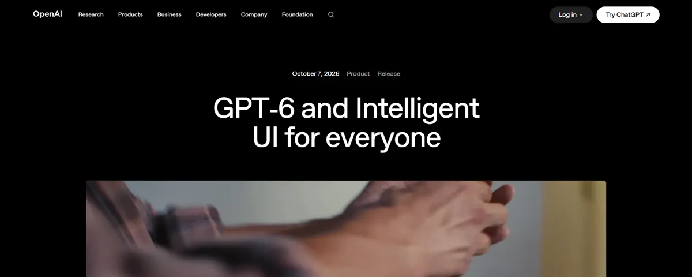
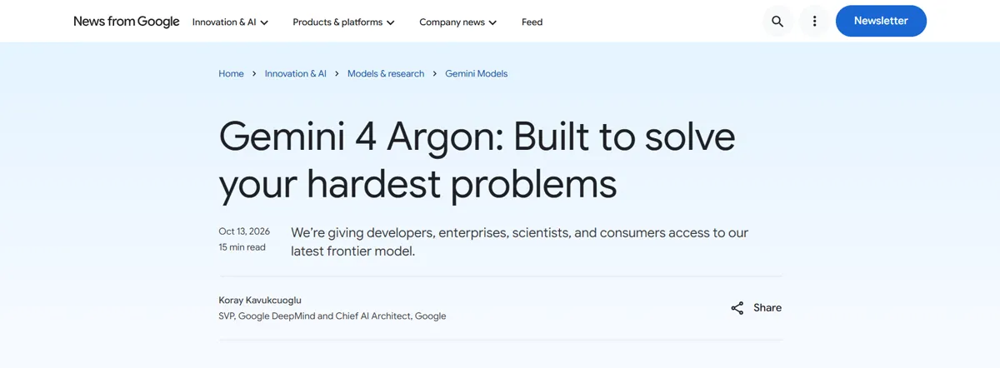

On October 7, 2026, Anthropic released Claude Haiku 5.5 and OpenAI started rolling out GPT-6 in ChatGPT, with free users getting it the next day. Six days later, Google launched Gemini 4 Argon.
 Claude
Claude ChatGPT
ChatGPT Gemini
Gemini- Grok
Anthropic, OpenAI, and Google each shipped a new model family within about a month. This post covers what came out, what it costs, and what I would try first as a builder in Nepal.
Anthropic: Claude 5.5 in three sizes
Claude Opus 5.5 launched on September 22 at $4 per million input tokens and $20 per million output tokens, with a 1 million token context window. Anthropic says it performs at the level of Claude Fable 5.1 on most work. It is for paid plans only.
Claude Sonnet 5.5 followed on September 28 at $2 input and $10 output. For most people this is the important one, because Sonnet 5.5 is available to free claude.ai users.
Then Claude Haiku 5.5 arrived on October 7, starting at $0.10 input and $0.50 output. That is 75% cheaper than Haiku 4.5, and it is on the free plan too.
OpenAI: GPT-6 under four names
OpenAI's naming is the hardest to follow this round, so here is the short version:

- GPT-6 Astra is the top model. It came to paid customers in September.
- GPT-6 Sol is the middle model, at $2/$10 in the API. Paid ChatGPT plans use it.
- GPT-6 Luna is the small one, at $0.10/$0.50. ChatGPT Free and Go use it.
- GPT-6.1 Terra launched on October 26 in the API at $1/$5, and in ChatGPT Work and Codex.
OpenAI says the API prices for Sol and Luna are 50% lower than the GPT-5.6 versions they replace.
The ChatGPT update on October 7 also added something OpenAI calls Intelligent UI. Answers can now include interactive pieces like comparisons, diagrams, calculators, bill splitters, and small games. Free users started getting GPT-6 Luna on October 8, with unlimited everyday text chats, subject to abuse safeguards. One catch: ChatGPT Free can show ads in some regions.
Google: Gemini 4 Argon, priced for paying users
Google made Gemini 3.8 Flash generally available on September 2, then launched Gemini 4 Argon on October 13. Argon is the most capable Gemini so far, with a 1 million token limit.

The API price is $2 input and $10 output as an intro offer until November 30. After that it goes up to $4/$20. Argon is not on the API free tier, and in the Gemini app it is only for Google AI Pro and Ultra subscribers.
Google also announced Gemini 4 Carbon around October 28, but it is going to cyber defenders first.
What free Gemini users get is less clear. Google changed the free plan on October 9, and reports disagree on which models it includes.
xAI: Grok 4.7, and talk of 4.8
Grok 4.7 came out on September 21 at $2 input and $6 output, with a 500k context window. Elon Musk has talked about Grok 4.8, but as of October 21 it was not released, so I would not plan around it yet.
What free users get now
The short list to remember:
- Claude free: Sonnet 5.5 and Haiku 5.5.
- ChatGPT Free: GPT-6 Luna, with Intelligent UI, and possible ads depending on your region.
- Gemini free: check Google's plan page, because the October 9 change made this unclear.
In my opinion, Sonnet 5.5 on the free plan is the best deal here. Developers pay $2/$10 per million tokens for it in the API.
Small and mid-tier prices keep falling
Most real apps run on small and middle models, because those are what you can afford to call thousands of times a day. GPT-6.1 Terra at $1/$5 now sits below Sol and Sonnet 5.5. Haiku 5.5 and GPT-6 Luna both start at $0.10 input and $0.50 output. For a side project that makes a few hundred calls a day, that is a very small bill.
What I would try first from Nepal
Most of us here do not have an international card, so start with what costs nothing and move up slowly:
- Use free Claude with Sonnet 5.5 for writing, studying, and coding questions. Of the free options, this is where I would start.
- Use ChatGPT Free with GPT-6 Luna when you want a calculator, comparison, or diagram inside the answer. Intelligent UI is the new reason to open it.
- For an app, test Haiku 5.5 or GPT-6 Luna first. Move up to Terra or Sonnet only when the small model clearly fails your task.
- Skip Opus 5.5, GPT-6 Astra, and Gemini 4 Argon unless someone else is paying. They are paid only, and Argon's API price doubles after November 30.
If you cannot pay in dollars yet, build your first version on the free chat apps and move to the API later, starting with the small models.
FAQ
Which of the new models can I use without paying?
Claude Sonnet 5.5 and Haiku 5.5 are on the free claude.ai plan, and ChatGPT Free uses GPT-6 Luna. For Gemini, check Google's plan page, since the free models changed on October 9.
Is Gemini 4 Argon worth paying for right now?
Only if you need its 1M token limit and already have a way to pay. The intro API price of $2/$10 ends on November 30, and then it doubles to $4/$20.
About the author. Diwakar Ray Yadav writes about AI tools, prompt engineering, and automation from hands-on experiments in Kathmandu. Read more about Diwakar.